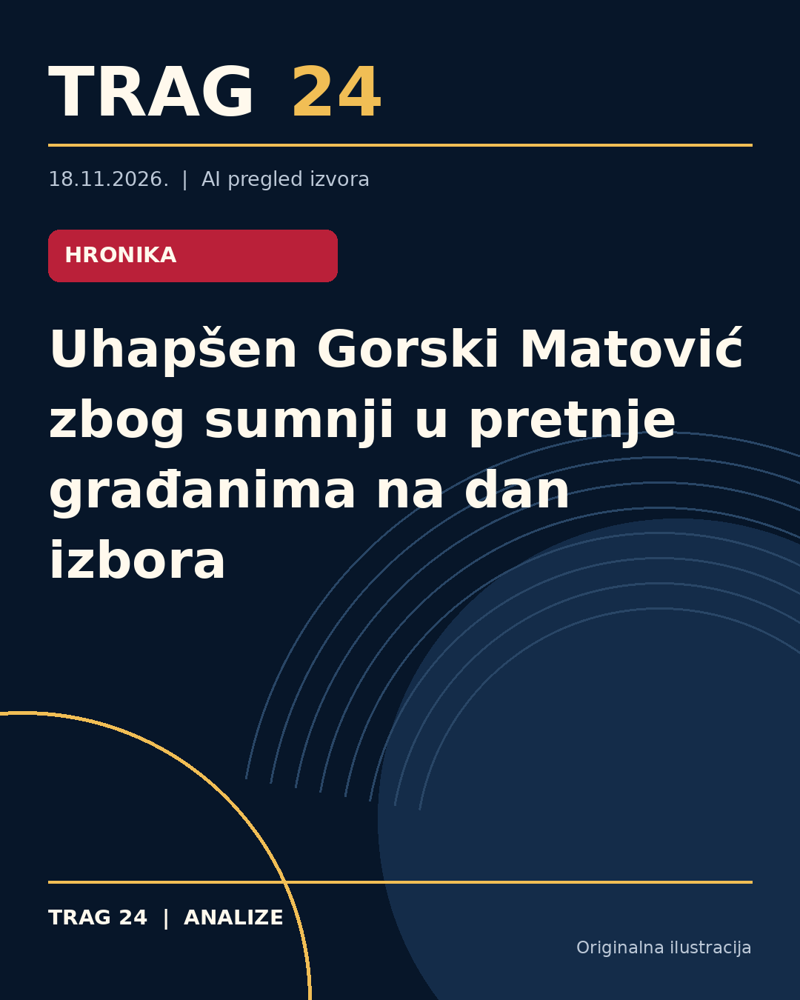

Uhapšen Gorski Matović zbog sumnji u pretnje građanima na dan izbora

ŠTA SE DOGODILO
Osnovno javno tužilaštvo u Novom Sadu je uhapsilo Gorskog Matovića zbog sumnje da je 25. oktobra, na dan izbora, na Novom naselju u Novom Sadu upućivao ozbiljne pretnje smrću i ugrozio sigurnost više osoba. Matoviću je određeno zadržavanje do 48 sati.
HRONOLOGIJA
Incident zbog kojeg je Matović uhapšen dogodio se 25. oktobra ove godine, na sam dan izbora. Policija je početkom novembra pokrenula potragu za njim jer nije pronađen na adresi prebivališta. Nakon hapšenja, Matović će u zakonskom roku biti priveden i saslušan pred javnim tužiocem.
ŠTA NAVODE IZVORI
Svi izvori potvrđuju da je Matović osumnjičen za krivično delo ugrožavanja sigurnosti po članu 138, stav 2 Krivičnog zakonika, usled ozbiljnih pretnji koje je uputio. Prema Vremenu, Matović je ranije bio pomilovan od strane predsednika Srbije Aleksandra Vučića zbog ranijeg napada na studente. Tužilaštvo iz Blica i Kurira naglašava da su pretnje bile ozbiljne i usmerene ka ugrožavanju života više osoba.
ŠTA JE POTVRĐENO
Potvrđeno je hapšenje Matovića po osnovu sumnje da je pretio građanima tokom izbornog dana. Tužilaštvo je jasno saopštilo da se radi o krivičnom delu koje se odnosi na ugrožavanje sigurnosti. Takođe je potvrđeno da će Matović biti saslušan u zakonskom roku.
ŠTA NIJE POTVRĐENO
Nije potvrđeno ko je konkretno još bio uključen u incident pored Matovića i da li su vodioci drugih lica učestvovali. Detalji o prirodi i sadržaju pretnji, kao i ishod dalje istrage, nisu dostupni iz dostavljenih izvora. Nije precizirano da li je Matović negirao optužbe ili izneo svoju odbranu.
ŠTA OSTАJE OTVORENO: Ostaje nepoznato da li će biti podignuta optužnica, kao i kako će se dalje odvijati pravni proces protiv Matovića. Ostaje otvorena i detaljnija pozadina sukoba i motiva koji su doveli do izjava i pretnji na dan izbora. Takođe, nije poznato da li je bilo dodatnih mera bezbednosti ili reakcija na ovaj incident u javnosti ili institucijama.
Izvori
- https://vreme.com/vesti/uhapsen-gorski-matovic/
- https://www.blic.rs/vesti/hronika/uhapsen-gorski-matovic-zbog-pretnji-tokom-izbora/v93d6xk
- https://www.kurir.rs/crna-hronika/10166080/uhapsen-gorski-matovic
Ova analiza je pripremljena uz pomoć veštačke inteligencije na osnovu javno dostupnih izvora. Navodi izvora nisu nužno nezavisno potvrđeni.